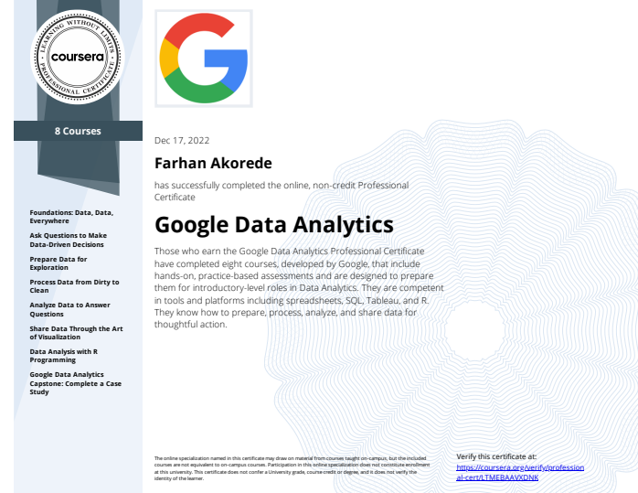

About Me
Name
Farhan Rhidor Akorede
Education
Doctor of Veterinary Medicine, University of Ilorin, Ilorin. Kwara State.
Certificates
- Google career certificates (Data Analysis).
- Research writing in science.
- Animal advocacy career course.
- Communication: Excellent written and verbal communication skills. Ability to communicate complex ideas
clearly and concisely to a variety of audiences. - Leadership: Excellent in managing and supervising a team with prove n track record of leading as much as a team of 20 individuals to achieve a common goal.
- Teamwork: Ability to work effectively as part of a team to achieve common goals. Experience collaborating with team members from diverse backgrounds.
- Problem-solving: Ability to identify and solve problems creatively and efficiently. Experience troubleshooting complex issues and developing solutions.
- Time management: Ability to manage time effectively and prioritize tasks. Experience meeting deadlines and working under good prompt.
- Excel (Working proficiency)
- SQL with preference in (Postgre, MySQL, and Microsoft) Upper Intermediate.
- PowerBI.
- Tableau.
- Word docs (Expert)
- Canva (Expert)
- Academic Writing: I have written quite a number of Academic writing as a researcher and as a freelancer.
- Public Speaking: I have experience in delivering lectures to a large audience, I have moderated panel discussions and good at presentations.
- Volunteering: I have organised and participate in a number of volunteering activities and campaigns.
- Facilitating: I have experience in facilitating and educating. I once joined a team that educated 2000 basic school students on the important of One Health.
- Vaccine attitudes amongst Livestock farmers with Drs Uthman A, Abdulkareem L, and AbdulAzeez A 2023
- SMART ADVISORY LIMITED (Perception of Nigerians on Internal Agencies of the government) 2022
- WHO Polio Vaccination scheme Oyo State (Data entry) 2015
- Reading
- Football(Soccer)
- Chess
- Gaming
- Traveling
Skills
Soft skills
Tech skills
Other skills
Work Experience as Data Analyst
Hobbies
My Data Analysis Journey: A short story
I have always loved figures and what figures say. Growing up, I would help my mom sell at her grocery store in the neighbourhood, the act of buying and selling to make good profit while making customers happy appeals to me so much then that I look forward to every time thereis need for me to stay in the store. This must've incited my vigor for business as I would later go into Entrepreneurship. I started a production business during my undergraduate days with a partner and I managed the business till the business was able to employ, register under the CAC, and send products abroad. However my love for research could be said to have been birthed from being an astute observer. I pay attention to details, and I like to make use of prior information before making a decision and I love taking on hard challenges - puzzles, riddles, and going for quizzes- I would represent my faculty and win lots of prices.
Amazingly, I never got to learn any analytical tools while in school, the most I have done using a tool was when i worked as a data entry with a WHO Team on Polio vaccination project in Oyo State. After then the next was when I did my undergraduate thesis and I had to use GraphPad.
After Graduating medical school, I knew I have to invest and make more use of my interest in research so I made a determination to learn every digital skills needed for me to become a better data-driven decision maker and take up researches that look into gaps in Animal health and human health in Africa. Fortunately, I got a scholarship to Google Career certificates from ITExperience through an email sent to me by a friend (Maryam Anishere, a very sound Data Scientist). I took the course and that was the beginning of a path that I hope to be better and make use of every skills I learn to contribute to the development of my immediate society, Africa, and possibly the whole world.
Thank you.